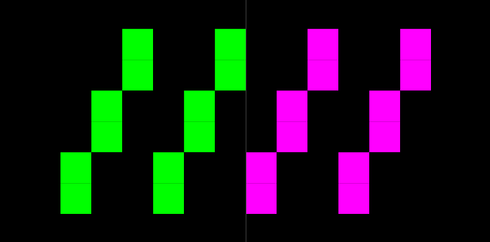
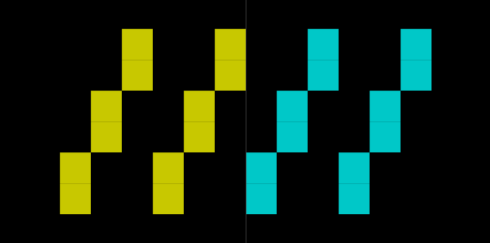
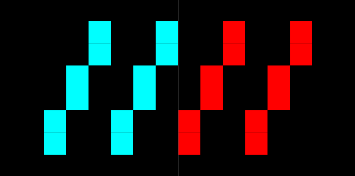

haitch's
for the machine in rainbows
These were built one at a time, as each was needed, and they turned out to fit together into a working toolchain for the ZX Spectrum. zen80 is a Z80 CPU core. zenzx wraps it into a full 48K/128K/+2/+3 machine, tape and snapshot support included. zenas assembles Z80 and Z80N source and can run what it assembles inside its own built-in emulator. zentools converts between tape (TAP/TZX), snapshot (.sna/.z80), and BASIC formats. zenimate draws and animates multi-frame sprites. plus3 reads and writes +3DOS disk images. All under active development.
Projects
Convert and inspect the formats a Spectrum actually used
A Z80, stepped one instruction at a time
48K to +3, one emulator, one Z80 core underneath
An assembler that runs what it assembles
Draw the frame, paint the attributes, watch it move
Everything the +3's disk drive ever wrote, on your host
Bitmap fonts for screens too small for anti-aliasing